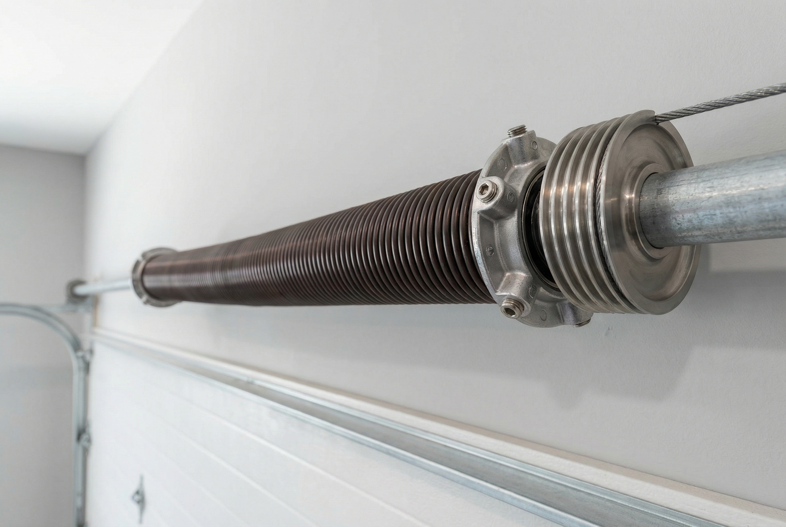

Garage doors are mechanical systems with dozens of moving parts, and any one of them can fail under the stress of daily use — especially here in Gilbert, where Arizona's heat, dust, and UV exposure push hardware harder than nearly anywhere else in the country. Here are the most common problems our technicians encounter and how we resolve them.
Broken Torsion or Extension Springs
A broken spring is the number one reason garage doors fail to open in Gilbert. Arizona's extreme thermal cycling — from cool desert nights to 115-degree summer afternoons — accelerates metal fatigue, causing springs to break earlier than their rated cycle count. When a spring snaps, you'll often hear a loud bang, and the door will feel impossibly heavy or refuse to move entirely. Our technicians replace torsion and extension springs the same day with properly sized, high-cycle hardware built for desert conditions.
Garage Door Opener Not Working
An opener that won't respond to the remote, wall button, or app is one of the most frustrating problems homeowners face — especially when your car is stuck inside. The cause could be a burned-out capacitor, a failed logic board, a stripped drive gear, or simply a power issue. We diagnose all opener failures and repair or replace openers from every major brand, including LiftMaster, Chamberlain, Genie, and Craftsman. In many cases we can have the unit back online within an hour of arrival.
Door Off Track or Misaligned
A garage door that has jumped its tracks is a serious problem that must be addressed immediately. The door becomes unstable and dangerous to operate, and further movement can bend the tracks, damage the panels, or snap cables under tension. Off-track doors are often caused by a broken spring, a snapped cable, impact damage (backing into the door), or worn rollers that slip out of the track channel. We realign and reseat the door, repair or replace the affected components, and ensure the entire system is balanced before we leave.
Worn or Broken Cables
The lift cables on your garage door connect the bottom bracket to the spring drum and bear significant tension every time the door moves. Over time, the individual steel strands in the cable fray and eventually snap — often without warning. A cable failure is immediately obvious: one side of the door will hang low, the bottom may bow outward, or the door may refuse to open at all. Cable replacement requires de-tensioning the springs first, which is why it's always a job for a professional. We replace cables correctly and re-tension the system to ensure balanced operation.

Damaged or Dented Panels
Panel damage ranges from cosmetic dents from minor impacts to significant structural deformation that affects how the door hangs and travels. A severely damaged panel can throw the door out of alignment, creating gaps that let in heat, pests, and dust — all serious concerns in Gilbert's desert environment. We assess whether damaged panels can be replaced individually or whether a full door replacement makes more economic sense, and we give you an honest recommendation either way.
Noisy Garage Door (Grinding, Squeaking, Rattling)
A garage door should operate with minimal noise. Grinding typically indicates worn or dry metal rollers dragging against the tracks. Squeaking usually points to dry hinges or rollers that need lubrication. Rattling can mean loose hardware — bolts, brackets, or track fasteners that have worked themselves loose over time. In Gilbert, the caliche dust that permeates the air works its way into every crevice of your door system, turning dry lubricant into an abrasive paste that accelerates wear. A professional tune-up resolves most noise complaints and extends the life of your entire system.
Safety Sensor Issues
The photoelectric safety sensors at the base of your door tracks are required by federal law and serve a critical function — they prevent the door from closing on a person, pet, or vehicle. When sensors malfunction, the door either won't close at all (the opener blinks or beeps in a diagnostic pattern) or it closes despite an obstruction. Common causes include misalignment from bumps or vibration, dirty lenses coated in Arizona dust, wiring damage, or failed sensor units. We diagnose and repair sensor problems quickly, because a door that won't close is both a security issue and a source of significant energy loss in the summer heat.
Garage Door Won't Close Completely
A door that stops short of the floor and reverses, or closes most of the way and then bounces back up, is usually a sensor or limit setting problem. Misaligned sensors trigger the safety reverse before the door reaches the ground. Incorrect limit settings tell the opener it has reached the floor when it hasn't. In some cases, an obstruction on the floor — even a small piece of debris — can trigger the safety reverse. We diagnose the specific cause and adjust sensors, limits, and force settings so your door closes fully and reliably every time.